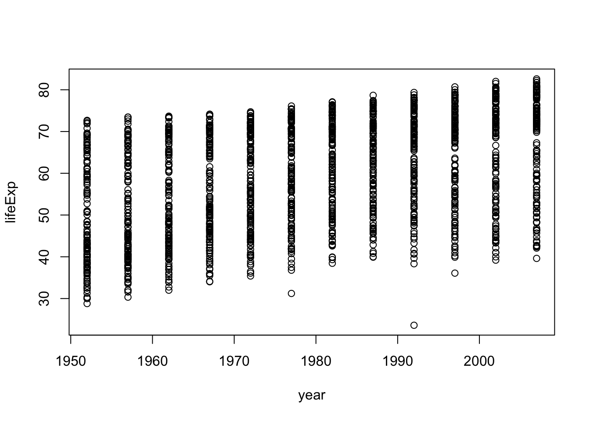
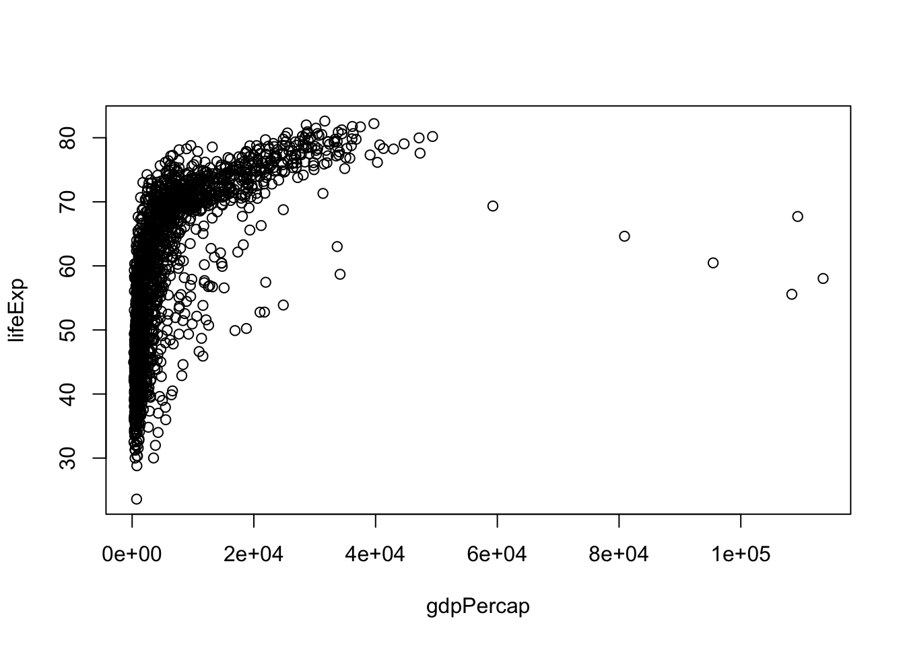
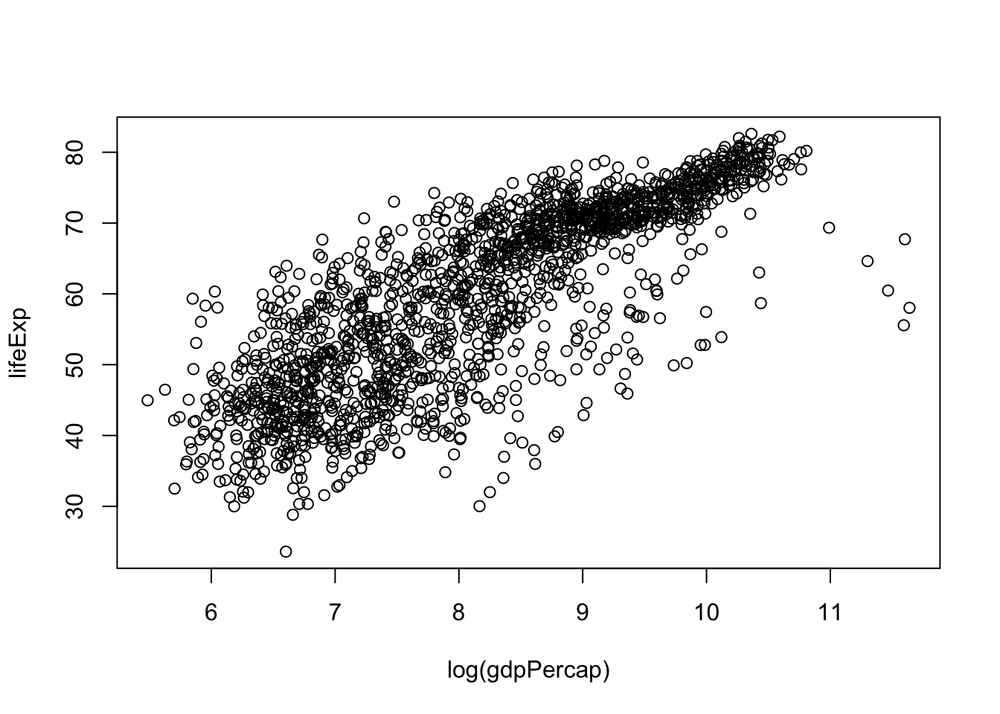
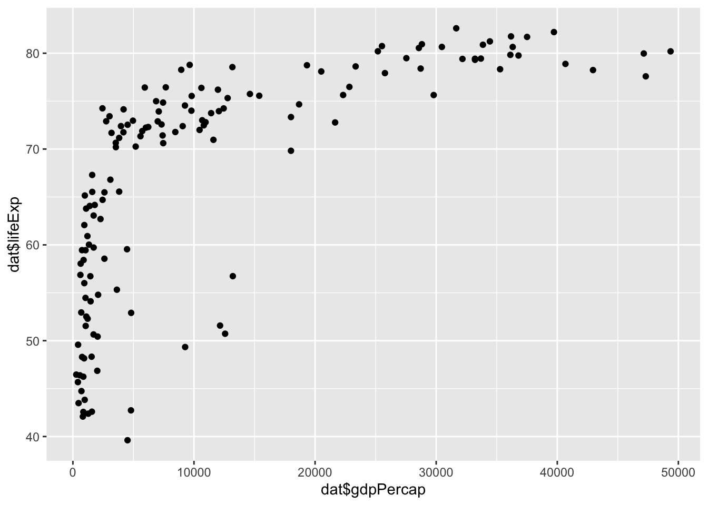
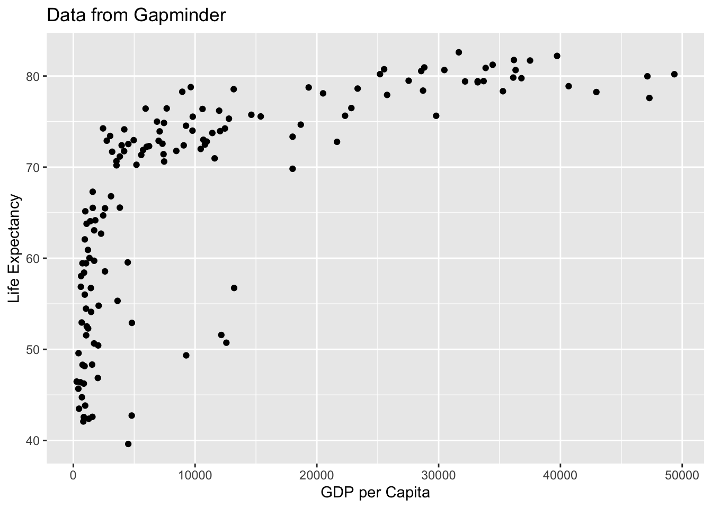
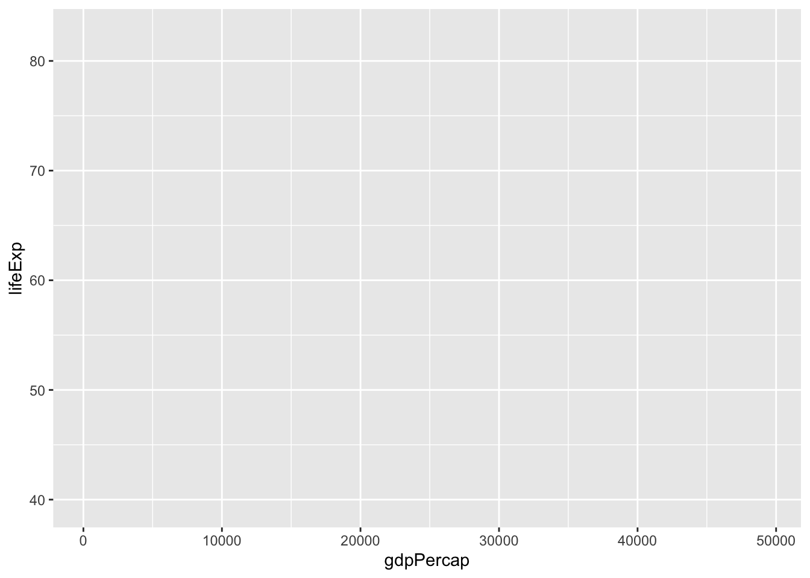
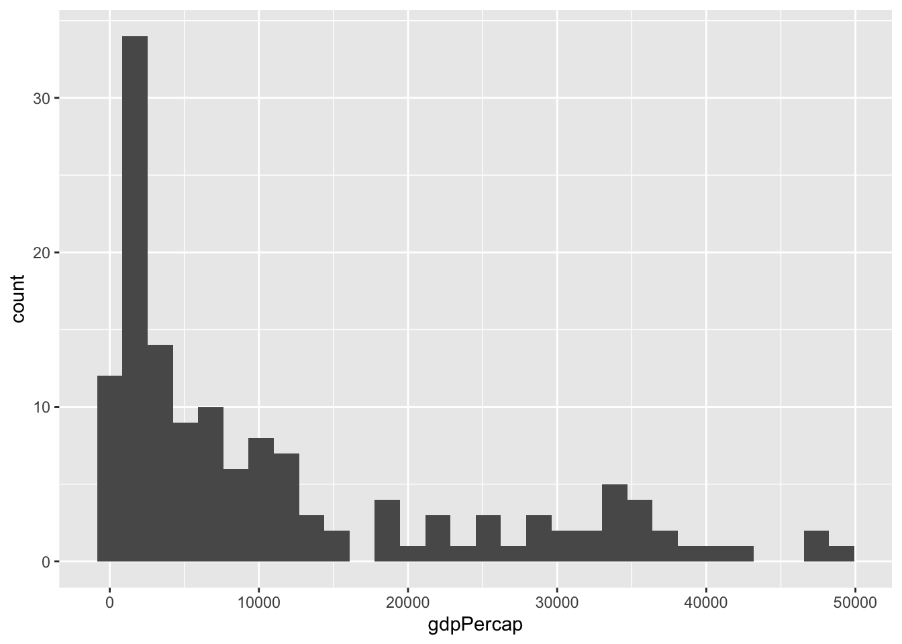
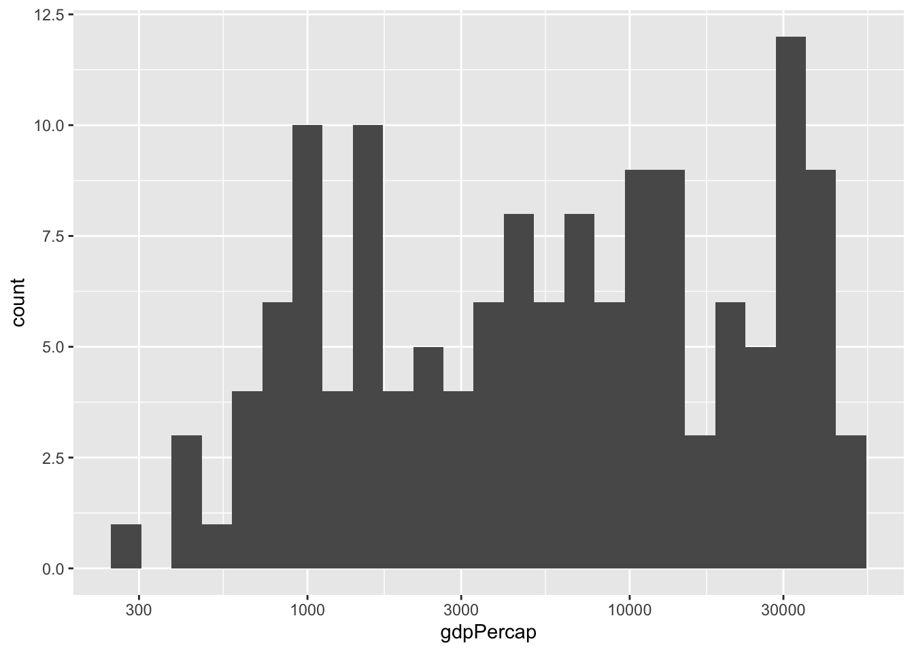
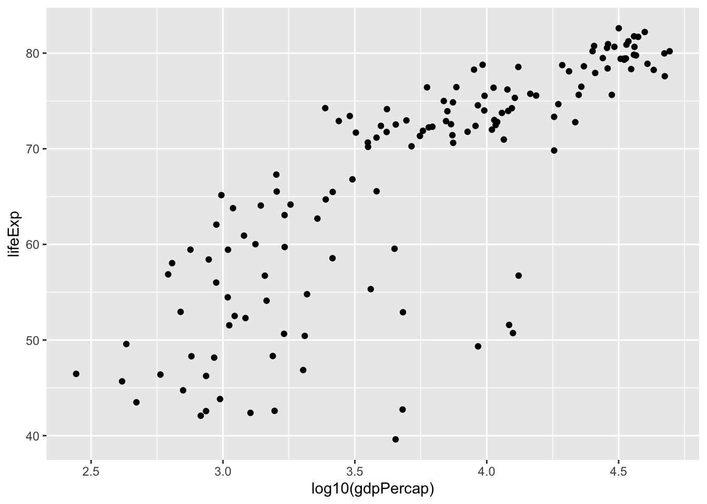
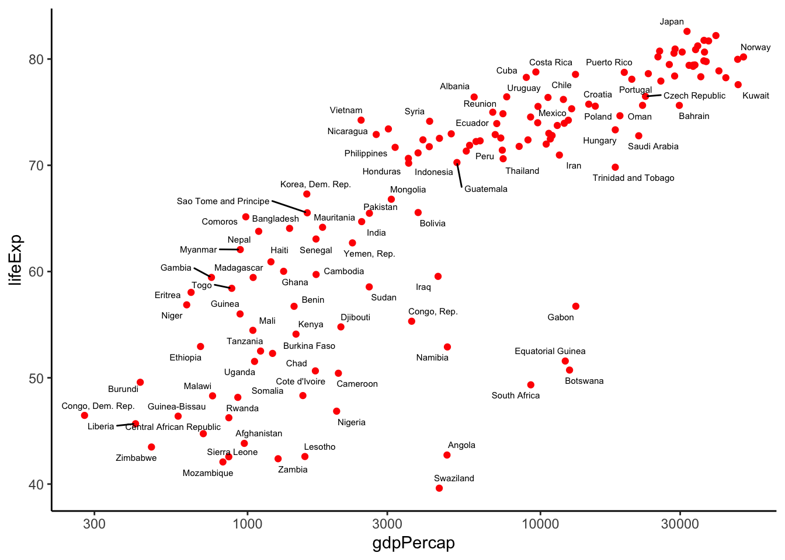

library(devtools)
install_github("jennybc/gapminder")Motivation: Global Health and Economic Data
Throughout this section we will be analyzing global health and economic data. We will be exploring one question:
- Is there a relationship between life expectancy and GDP per capita?
We will use the data that has been organized and delivered in the gapminder package available in an R package from Jenny Bryan.
To install the gapminder data set
Loading data into R
library(gapminder)Meet the gapminder data frame or “tibble”
By loading the gapminder package, we now have access to a data frame by the same name. Get an overview of this with str(), which displays the structure of an object.
str(gapminder)tibble [1,704 × 6] (S3: tbl_df/tbl/data.frame)
$ country : Factor w/ 142 levels "Afghanistan",..: 1 1 1 1 1 1 1 1 1 1 ...
$ continent: Factor w/ 5 levels "Africa","Americas",..: 3 3 3 3 3 3 3 3 3 3 ...
$ year : int [1:1704] 1952 1957 1962 1967 1972 1977 1982 1987 1992 1997 ...
$ lifeExp : num [1:1704] 28.8 30.3 32 34 36.1 ...
$ pop : int [1:1704] 8425333 9240934 10267083 11537966 13079460 14880372 12881816 13867957 16317921 22227415 ...
$ gdpPercap: num [1:1704] 779 821 853 836 740 ...str() will provide a sensible description of almost anything and, worst case, nothing bad can actually happen. When in doubt, just str() some of the recently created objects to get some ideas a bout what to do next.
We could print the gapminder object itself to screen. However, if you’ve used R before, you might be reluctant to do this, because large datasets just fill up your console and provide very little insight.
This is the first big win for tibbles. The tidyverse offers a special case of R’s default data frame: the “tibble”, which is a nod to the actual class of these objects, tbl_df.
Now we can boldly print gapminder to screen! It is a tibble (and also a regular data frame) and the tidyverse provides a nice print method that shows the most important stuff and doesn’t fill up your Console.
## see? it's still a regular data frame, but also a tibble
class(gapminder)[1] "tbl_df" "tbl" "data.frame"gapminder# A tibble: 1,704 × 6
country continent year lifeExp pop gdpPercap
<fct> <fct> <int> <dbl> <int> <dbl>
1 Afghanistan Asia 1952 28.8 8425333 779.
2 Afghanistan Asia 1957 30.3 9240934 821.
3 Afghanistan Asia 1962 32.0 10267083 853.
4 Afghanistan Asia 1967 34.0 11537966 836.
5 Afghanistan Asia 1972 36.1 13079460 740.
6 Afghanistan Asia 1977 38.4 14880372 786.
7 Afghanistan Asia 1982 39.9 12881816 978.
8 Afghanistan Asia 1987 40.8 13867957 852.
9 Afghanistan Asia 1992 41.7 16317921 649.
10 Afghanistan Asia 1997 41.8 22227415 635.
# ℹ 1,694 more rowsThis package provides a subset of the data provided by Gapminder. The data comes as a data frame (or tbl_df if you’re using dplyr). We can visit Gapminder.org documentation page to obtain information about the columns:
| variable | meaning |
|---|---|
| country | |
| continent | |
| year | |
| lifeExp | life expectancy at birth |
| pop | total population |
| gdpPercap | per-capita GDP |
If you are dealing with plain vanilla data frames, you can rein in data frame printing explicitly with head() and tail(). Or turn it into a tibble with as_tibble()!
head(gapminder)# A tibble: 6 × 6
country continent year lifeExp pop gdpPercap
<fct> <fct> <int> <dbl> <int> <dbl>
1 Afghanistan Asia 1952 28.8 8425333 779.
2 Afghanistan Asia 1957 30.3 9240934 821.
3 Afghanistan Asia 1962 32.0 10267083 853.
4 Afghanistan Asia 1967 34.0 11537966 836.
5 Afghanistan Asia 1972 36.1 13079460 740.
6 Afghanistan Asia 1977 38.4 14880372 786.tail(gapminder)# A tibble: 6 × 6
country continent year lifeExp pop gdpPercap
<fct> <fct> <int> <dbl> <int> <dbl>
1 Zimbabwe Africa 1982 60.4 7636524 789.
2 Zimbabwe Africa 1987 62.4 9216418 706.
3 Zimbabwe Africa 1992 60.4 10704340 693.
4 Zimbabwe Africa 1997 46.8 11404948 792.
5 Zimbabwe Africa 2002 40.0 11926563 672.
6 Zimbabwe Africa 2007 43.5 12311143 470.More ways to query basic info on a data frame:
names(gapminder)[1] "country" "continent" "year" "lifeExp" "pop" "gdpPercap"ncol(gapminder)[1] 6length(gapminder)[1] 6dim(gapminder)[1] 1704 6nrow(gapminder)[1] 1704A statistical overview can be obtained with summary()
summary(gapminder) country continent year lifeExp
Afghanistan: 12 Africa :624 Min. :1952 Min. :23.60
Albania : 12 Americas:300 1st Qu.:1966 1st Qu.:48.20
Algeria : 12 Asia :396 Median :1980 Median :60.71
Angola : 12 Europe :360 Mean :1980 Mean :59.47
Argentina : 12 Oceania : 24 3rd Qu.:1993 3rd Qu.:70.85
Australia : 12 Max. :2007 Max. :82.60
(Other) :1632
pop gdpPercap
Min. :6.001e+04 Min. : 241.2
1st Qu.:2.794e+06 1st Qu.: 1202.1
Median :7.024e+06 Median : 3531.8
Mean :2.960e+07 Mean : 7215.3
3rd Qu.:1.959e+07 3rd Qu.: 9325.5
Max. :1.319e+09 Max. :113523.1
Although we haven’t begun our formal coverage of visualization yet, it’s so important for smell-testing dataset that we will make a few figures anyway. Here we use only base R graphics, which are very basic.
plot(lifeExp ~ year, gapminder)
plot(lifeExp ~ gdpPercap, gapminder)
plot(lifeExp ~ log(gdpPercap), gapminder)
Welcome to the “Tidyverse”
The tidyverse is “an opinionated collection of R packages designed for data science. All packages share an underlying philosophy and common APIs.”
Another way of putting it is that it’s a set of packages that are useful specifically for data manipulation, exploration and visualization with a common philosphy.
What is this common philosphy?
The common philosphy is called “tidy” data. It is a standard way of mapping the meaning of a dataset to its structure.
In tidy data:
- Each variable forms a column.
- Each observation forms a row.
- Each type of observational unit forms a table.

Below, we are interested in transformating the table on the right to the the table on the left, which is considered “tidy”.

Working with tidy data is useful because it creates a structured way of organizing data values within a data set. This makes the data analysis process more efficient and simplifies the development of data analysis tools that work together. In this way, you can focus on the problem you are investigating, rather than the uninteresting logistics of data.
What is in the tidyverse?
We can install and load the set of R packages using install.packages("tidyverse") function.
When we load the tidyverse package using library(tidyverse), there are six core R packages that load:
- readr, for data import.
- tidyr, for data tidying.
- dplyr, for data wrangling.
- ggplot2, for data visualisation.
- purrr, for functional programming.
- tibble, for tibbles, a modern re-imagining of data frames.
Here, we load in the tidyverse.
library(tidyverse)Because these packages all share the “tidy” philosphy, the data analysis workflow is easier as you move from package to package.
Today we will focus on dplyr and ggplot2, for data wrangling and visualiation, but definitely check out the other packages such as readr, tidyr, R packages to import data, to transform data to the “tidy” format.
Data wrangling
In the real world, analyzing data rarely involves data that can be easily imported and ready for analysis. According to Wikipedia:
Data munging or data wrangling is loosely the process of manually converting or mapping data from one “raw” form into another format that allows for more convenient consumption of the data with the help of semi-automated tools.
As you will see in class, one of the most time-consuming aspects of the data analysis process is “data wrangling”. This is also is a trendy term for cleaning up a messy data set.
R provides incredibly powerful and flexible language for data wrangling. However, the syntax is somewhat hard to get used to. We will therefore introducing a package that makes the syntax much more like the English language. This package is dplyr.
The dplyr R package
dplyr is a powerful R-package to transform and summarize tabular data with rows and columns.
The package contains a set of functions (or “verbs”) to perform common data manipulation operations such as filtering for rows, selecting specific columns, re-ordering rows, adding new columns and summarizing data.
In addition, dplyr contains a useful function to perform another common task which is the is the “split-apply-combine” concept. We will discuss that in a little bit.
How does it compare to using base functions R?
If you are familiar with R, you are probably familiar with base R functions such as split(), subset(), apply(), sapply(), lapply(), tapply() and aggregate(). Compared to base functions in R, the functions in dplyr are easier to work with, are more consistent in the syntax and are targeted for data analysis around data frames instead of just vectors.
The important dplyr verbs to remember are:
dplyr verbs |
Description |
|---|---|
select() |
select columns |
filter() |
filter rows |
arrange() |
re-order or arrange rows |
mutate() |
create new columns |
summarize() |
summarize values |
group_by() |
allows for group operations in the “split-apply-combine” concept |
Pipe operator: %>%
Before we go any futher, let’s introduce the pipe operator: %>%. In our stocks example, we briefly saw this symbol. It is called the pipe operator. dplyr imports this operator from another package (magrittr) see help file here. This operator allows you to pipe the output from one function to the input of another function. Instead of nesting functions (reading from the inside to the outside), the idea of of piping is to read the functions from left to right.
dplyr verbs in action
The two most basic functions are select() and filter() which selects columns and filters rows, respectively.
Selecting columns using select()
To select all the columns except a specific column, use the “-” (subtraction) operator (also known as negative indexing).
gapminder %>%
select(-lifeExp)# A tibble: 1,704 × 5
country continent year pop gdpPercap
<fct> <fct> <int> <int> <dbl>
1 Afghanistan Asia 1952 8425333 779.
2 Afghanistan Asia 1957 9240934 821.
3 Afghanistan Asia 1962 10267083 853.
4 Afghanistan Asia 1967 11537966 836.
5 Afghanistan Asia 1972 13079460 740.
6 Afghanistan Asia 1977 14880372 786.
7 Afghanistan Asia 1982 12881816 978.
8 Afghanistan Asia 1987 13867957 852.
9 Afghanistan Asia 1992 16317921 649.
10 Afghanistan Asia 1997 22227415 635.
# ℹ 1,694 more rowsThe function select() is much more powerful though. To select a range of columns by name, use the “:” (colon) operator
gapminder %>%
select(lifeExp:gdpPercap)# A tibble: 1,704 × 3
lifeExp pop gdpPercap
<dbl> <int> <dbl>
1 28.8 8425333 779.
2 30.3 9240934 821.
3 32.0 10267083 853.
4 34.0 11537966 836.
5 36.1 13079460 740.
6 38.4 14880372 786.
7 39.9 12881816 978.
8 40.8 13867957 852.
9 41.7 16317921 649.
10 41.8 22227415 635.
# ℹ 1,694 more rowsTo select all columns that start with the character string “c”, use the function starts_with()
gapminder %>%
select(starts_with("c"))# A tibble: 1,704 × 2
country continent
<fct> <fct>
1 Afghanistan Asia
2 Afghanistan Asia
3 Afghanistan Asia
4 Afghanistan Asia
5 Afghanistan Asia
6 Afghanistan Asia
7 Afghanistan Asia
8 Afghanistan Asia
9 Afghanistan Asia
10 Afghanistan Asia
# ℹ 1,694 more rowsSome additional options to select columns based on a specific criteria include
ends_with()= Select columns that end with a character stringcontains()= Select columns that contain a character stringmatches()= Select columns that match a regular expressionone_of()= Select columns names that are from a group of names
Selecting rows using filter()
Let’s say we only want the data from 2007.
To do this, we can use the filter() function to filter the rows for years in 2007.
gapminder %>%
filter(year == "2007")# A tibble: 142 × 6
country continent year lifeExp pop gdpPercap
<fct> <fct> <int> <dbl> <int> <dbl>
1 Afghanistan Asia 2007 43.8 31889923 975.
2 Albania Europe 2007 76.4 3600523 5937.
3 Algeria Africa 2007 72.3 33333216 6223.
4 Angola Africa 2007 42.7 12420476 4797.
5 Argentina Americas 2007 75.3 40301927 12779.
6 Australia Oceania 2007 81.2 20434176 34435.
7 Austria Europe 2007 79.8 8199783 36126.
8 Bahrain Asia 2007 75.6 708573 29796.
9 Bangladesh Asia 2007 64.1 150448339 1391.
10 Belgium Europe 2007 79.4 10392226 33693.
# ℹ 132 more rowsNote: you can use the boolean operators (e.g. >, <, >=, <=, !=, %in%) to create logical tests.
For example, if we wanted only years after 2014, we can add a second criteria:
gapminder %>%
filter(year > 1977)# A tibble: 852 × 6
country continent year lifeExp pop gdpPercap
<fct> <fct> <int> <dbl> <int> <dbl>
1 Afghanistan Asia 1982 39.9 12881816 978.
2 Afghanistan Asia 1987 40.8 13867957 852.
3 Afghanistan Asia 1992 41.7 16317921 649.
4 Afghanistan Asia 1997 41.8 22227415 635.
5 Afghanistan Asia 2002 42.1 25268405 727.
6 Afghanistan Asia 2007 43.8 31889923 975.
7 Albania Europe 1982 70.4 2780097 3631.
8 Albania Europe 1987 72 3075321 3739.
9 Albania Europe 1992 71.6 3326498 2497.
10 Albania Europe 1997 73.0 3428038 3193.
# ℹ 842 more rowsUse mutate() to add new variables
mutate() is a function that defines and inserts new variables into a tibble. You can refer to existing variables by name.
gapminder %>%
filter(year==2007) %>%
select(-continent) %>%
mutate(gdp = pop * gdpPercap)# A tibble: 142 × 6
country year lifeExp pop gdpPercap gdp
<fct> <int> <dbl> <int> <dbl> <dbl>
1 Afghanistan 2007 43.8 31889923 975. 31079291949.
2 Albania 2007 76.4 3600523 5937. 21376411360.
3 Algeria 2007 72.3 33333216 6223. 207444851958.
4 Angola 2007 42.7 12420476 4797. 59583895818.
5 Argentina 2007 75.3 40301927 12779. 515033625357.
6 Australia 2007 81.2 20434176 34435. 703658358894.
7 Austria 2007 79.8 8199783 36126. 296229400691.
8 Bahrain 2007 75.6 708573 29796. 21112675360.
9 Bangladesh 2007 64.1 150448339 1391. 209311822134.
10 Belgium 2007 79.4 10392226 33693. 350141166520.
# ℹ 132 more rowsArrange or re-order rows using arrange()
To arrange (or re-order) rows by a particular column such as the population, list the name of the column you want to arrange the rows by
gapminder %>%
filter(year==2007) %>%
select(-continent) %>%
mutate(gdp = pop * gdpPercap) %>%
arrange(gdp)# A tibble: 142 × 6
country year lifeExp pop gdpPercap gdp
<fct> <int> <dbl> <int> <dbl> <dbl>
1 Sao Tome and Principe 2007 65.5 199579 1598. 319014077.
2 Comoros 2007 65.2 710960 986. 701111696.
3 Guinea-Bissau 2007 46.4 1472041 579. 852652874.
4 Djibouti 2007 54.8 496374 2082. 1033689705.
5 Gambia 2007 59.4 1688359 753. 1270911775.
6 Liberia 2007 45.7 3193942 415. 1323912407.
7 Central African Republic 2007 44.7 4369038 706. 3084613079.
8 Eritrea 2007 58.0 4906585 641. 3146934084.
9 Lesotho 2007 42.6 2012649 1569. 3158513357.
10 Burundi 2007 49.6 8390505 430. 3608510288.
# ℹ 132 more rowsSo if we wanted to figure out what were the top three countries with the largest gdpPercap in 2007, we could use the desc() function inside of arrange() to order rows in a descending order.
gapminder %>%
filter(year == 2007) %>%
arrange(desc(gdpPercap)) %>%
head(n=3)# A tibble: 3 × 6
country continent year lifeExp pop gdpPercap
<fct> <fct> <int> <dbl> <int> <dbl>
1 Norway Europe 2007 80.2 4627926 49357.
2 Kuwait Asia 2007 77.6 2505559 47307.
3 Singapore Asia 2007 80.0 4553009 47143.Data visualization
ggplot2
ggplot2 is a powerful data exploration and visualization package that can create graphics in R. It was created by Hadley Wickham when he was a graduate student at Iowa State University and is based on the principals defined in the Grammar of Graphics.
Why is it useful?
The idea of the Grammar of Graphics is to break the graph into components and handle the components of a graph separately. The ggplot2 package contains a set of functions that allow us to build the features of the graph in a series of layers for versatility and control.
There are two main plotting functions in ggplot2:
qplot()= a quick plot, similar to theplot()function in base Rggplot()= a “grammar of graphics” (gg) plot which is made up two components (aggplot()object and at least onegeomlayer)
The ggplot2 is loaded whenever you load tidyverse, but you can always load it formally.
library(ggplot2)Life expectancy and GDP per capita
To try and answer our first question we will make a scatterplot. We will do this for the latest entry in our database which is:
max( gapminder$year )[1] 2007We will first make a quick plot of these two variables.
qplot
The qplot function allows us to produce simple plots, similar to plot in base R. The main input of qplot is an x and y argument, but it also accepts a data set (data) where the x and y variables are located.
To create a scatter-plot of life expectancy versus GDP per capita for 2007, we start by creating a subset of the data with only the 2007 year.
dat <- filter(gapminder, year==2007)Why does this not work?
qplot(x = gdpPercap, y = lifeExp) We need to specify where to get these values from. Instead, we can use the vectors of dat directly
## need to specify where variables are located
qplot(x = dat$gdpPercap, y = dat$lifeExp) Warning: `qplot()` was deprecated in ggplot2 3.4.0.
However, a cleaner way to do this does not define dat and instead uses the data argument:
## instead of having to specify name of data frame each time, just list it once
qplot(x = gdpPercap, y = lifeExp, data = filter(gapminder, year==2007))
If youw ant to add labels to the x and y axis, you can use the xlab and ylab arguments. You can read the help file to check out other arguments available in the function.
qplot(x = gdpPercap, y = lifeExp,
data = filter(gapminder, year==2007),
xlab = "GDP per Capita",
ylab = "Life Expectancy",
main = "Data from Gapminder")
From this plot, we see that there is a wide variability in life expectancy for the lower income countries and then somewhat of a positive trend. However, there are many countries with incomes below 5,000 dollars per person and it is hard to see differences between these. Next we will now learn about the grammar of graphics and create a series of visualizations.
ggplot
This function is the implementation of the “Grammar of Graphics” that allows us to build layers of graphical elements to produce plots. As explained by Hadley Wickham
the grammar tells us that a statistical graphic is a mapping from data to aesthetic attributes (colour, shape, size) of geometric objects (points, lines, bars). The plot may also contain statistical transformations of the data and is drawn on a specific coordinates system.
Terminology
- ggplot - the main function where you specify the data set and variables to plot (this is where we define the
xandyvariable names) - geoms - geometric objects
- e.g.
geom_point(),geom_bar(),geom_line(),geom_histogram()
- e.g.
- aes - aesthetics
- shape, transparency, color, fill, linetype
- scales - define how your data will be plotted
- continuous, discrete, log, etc
There are three ways to initialize a ggplot() object.
An empty ggplot object
ggplot() 
A ggplot object associated with a dataset
gapminder %>%
filter(year==2007) %>%
ggplot()
or a ggplot object with a dataset and x and y defined
gapminder %>%
filter(year==2007) %>%
ggplot(aes(x=gdpPercap, y = lifeExp))
Creating your first ggplot()
We just used the function aes() which is an aesthetic mapping function inside the ggplot() object. We use this function to specify plot attributes (e.g. x and y variable names) that will not change as we add more layers.
Anything that goes in the ggplot() object becomes a global setting. From there, we use the geom objects to add more layers to the base ggplot() object. These will define what we are interested in illustrating using the data.
Earlier we noticed that there are many countries with incomes below 5,000 dollars per person and it is hard to see differences between these. We can examine just this variable with a histogram. Here we would use a different geometry:
gapminder %>%
filter(year==2007) %>%
ggplot(aes(x=gdpPercap)) + geom_histogram()`stat_bin()` using `bins = 30`. Pick better value with `binwidth`.
The histogram shows very large tails. We may do better by transforming the data. For data like this, the log transformation seems to work well. It also has a nice economic interpretation related to percent growth: in \(log_{10}\) a change of 1 means the country is 10 times richer.
So how do we make the x-axis in the log scale? It is convenient to have this cheat sheet around when using ggplot2. From there we see that scale_x_log10 does what we want.
gapminder %>%
filter(year==2007) %>%
ggplot(aes(x=gdpPercap)) +
geom_histogram(bins=25) +
scale_x_log10()
We no longer see extreme tails. The scatter plot now looks much more informative:
Now we can remake the scatter plot but now make sure the x-axis is in a log-scale
gapminder %>%
filter(year==2007) %>%
ggplot(aes(x=gdpPercap, y = lifeExp)) +
geom_point() + scale_x_log10()
We can also do this:
gapminder %>%
filter(year==2007) %>%
ggplot(aes(x=log10(gdpPercap), y = lifeExp)) +
geom_point()
We can also use other really great packages, such as ggrepel:
library(ggrepel)
gapminder %>%
filter(year==2007) %>%
ggplot(aes(x=gdpPercap, y = lifeExp)) +
geom_point(color = 'red',) + scale_x_log10() +
geom_text_repel(aes(label = country), size = 2) +
theme_classic() Warning: ggrepel: 53 unlabeled data points (too many overlaps). Consider
increasing max.overlaps
Now you are ready to make presentation quality data visualizations!
Cheatsheets
Confessions and countermeasures with the tidyverse
Here are the awesome slides from Rachael Workman (PhD student in Biochemistry, Cellular and Molecular Biology (BCMB) program) where she discusses
Confessions and Countermeasures: my not ideal R habits and how the Tidyverse resolved them